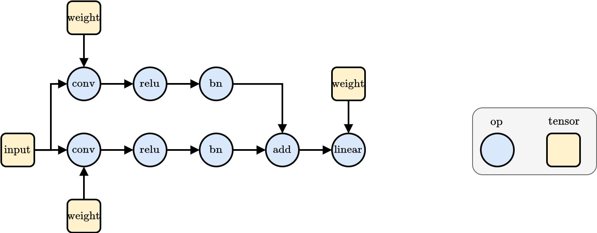
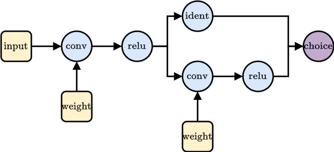

Warning
The search spaces in HANNAH are currently under construction. If you run into bugs, please contact us.
Search Spaces
Search spaces in HANNAH are directed graphs (DAGs) where the nodes are Ops or Tensors and the edges indicate data movement.
Note
Search spaces are not executable themselves but need an Executor which uses the current parametrization state to
build a forward.
from hannah.nas.functional_operators.operators import Conv2d

Basic Building Blocks
Ops & Tensors
Op nodes represent the operators used in the networks of the search space. Their basic syntax is
# usage
var_name = Operator(param0=val0, param1=val1, ...)(*operands)
Tensor nodes indicate the presence of data in the graph. They do not themselves contain actual values when the search space graph is defined (the actual data is managed by the Executor). The tensor node defines attributes that the data has at this point in the graph (e.g., shape, axis names, datatypes, ...).
from hannah.nas.functional_operators.operators import Conv2d
from hannah.nas.functional_operators.op import Tensor
input = Tensor(name='input', shape=(1, 3, 32, 32), axis=("N", "C", "H", "W"))
weight = Tensor(name='weight', shape=(32, 3, 1, 1), axis=("O", "I", "kH", "kW"))
conv = Conv2d(stride=2, dilation=1) # Define operator and parametrization
graph = conv(input, weight) # Define/create/extend graph
graph
Conv2d(Conv2d_0)
A set of basic operators is implemented in HANNAH, among them
- Convolution (1D, 2D)
- Linear
- BatchNorm
- Relu
- Add
and more operators will be added in the future. It is also easy to define a new operator, see Custom Ops.
Parametrization & Expressions
Note
For more information about parametrization and expressions, see Parametrization.
To build a search space it is not sufficient to feed scalar values to operator parameters. Instead, one can use parameters.
from hannah.nas.parameters.parameters import CategoricalParameter, IntScalarParameter
input = Tensor(name='input', shape=(1, 3, 32, 32), axis=("N", "C", "H", "W"))
weight = Tensor(name='weight', shape=(IntScalarParameter(min=8, max=64, name='out_channels'), 3, 1, 1), axis=("O", "I", "kH", "kW"))
# a search space with stride 1 and stride 2 convolutions
graph = Conv2d(stride=CategoricalParameter(name='stride', choices=[1, 2]))(input, weight)
graph.parametrization(flatten=True)
{'Conv2d_0.weight.out_channels': IntScalarParameter(rng = Generator(PCG64), name = out_channels, id = Conv2d_0.weight.out_channels, min = 8, max = 64, step_size = 1, current_value = 8),
None: CategoricalParameter(rng = Generator(PCG64), name = stride, id = None, choices = [1, 2], current_value = 1)}
As futher explained in Parametrization, parameters are expressions and can be combined to more complex expressions, encoding properties of the search space symbolically. One common use-case is symbolically expressing shapes. Consider for example the following:
in_channel = 3
kernel_size = 1
input = Tensor(name='input',
shape=(1, in_channel, 32, 32),
axis=('N', 'C', 'H', 'W'))
weight_0 = Tensor(name='weight',
shape=(IntScalarParameter(min=8, max=64, name='out_channels'), in_channel, kernel_size, kernel_size),
axis=("O", "I", "kH", "kW"))
conv_0 = Conv2d(stride=CategoricalParameter(name='stride', choices=[1, 2]))(input, weight_0)
How can we know the output shape of conv_0, e.g., to put it into the weight tensor of a following convolution, without knowing what value
the out_channel parameter has?
--> Each node has a method .shape() which returns the shape as an expression and can be used interchangeably with actual values. Those expressions
are then only evaluated at sampling and during the forward.
print("Input shape: ", input.shape())
print("Weight shape: ", weight_0.shape())
print("Convolution output shape:", conv_0.shape())
Input shape: (1, 3, 32, 32)
Weight shape: (IntScalarParameter(rng = Generator(PCG64), name = out_channels, id = Conv2d_0.weight.out_channels, min = 8, max = 64, step_size = 1, current_value = 8), 3, 1, 1)
Convolution output shape: (1, IntScalarParameter(rng = Generator(PCG64), name = out_channels, id = Conv2d_0.weight.out_channels, min = 8, max = 64, step_size = 1, current_value = 8), <hannah.nas.expressions.arithmetic.Floor object at 0x7ff93a6ce8c0>, <hannah.nas.expressions.arithmetic.Floor object at 0x7ff93a6ce7a0>)
The lazy keyword can be used to evaluate values which might be parameters (but could also be int or else).
from hannah.nas.functional_operators.lazy import lazy
print("Input shape: ", [lazy(i) for i in input.shape()])
print("Weight shape: ", [lazy(i) for i in weight_0.shape()])
print("Convolution output shape:", [lazy(i) for i in conv_0.shape()])
Input shape: [1, 3, 32, 32]
Weight shape: [8, 3, 1, 1]
Convolution output shape: [1, 8, 16, 16]
When defining an operator, one also has to define a shape function (the default shape function is identity, i.e., output_shape == input_shape). Tensors return their own shape.
Graphs and Hierarchy
As seen in the simple examples above, we can chain op and tensor nodes together to create graphs and use parameters to span search spaces.
from hannah.nas.functional_operators.operators import Relu
input = Tensor(name='input',
shape=(1, 3, 32, 32),
axis=('N', 'C', 'H', 'W'))
weight_0 = Tensor(name='weight', shape=(IntScalarParameter(min=8, max=64, name='out_channels'), 3, 1, 1), axis=("O", "I", "kH", "kW"))
conv_0 = Conv2d(stride=CategoricalParameter(name='stride', choices=[1, 2]))(input, weight_0)
relu_0 = Relu()(conv_0)
weight_1 = Tensor(name='weight', shape=(IntScalarParameter(min=32, max=64, name='out_channels'), conv_0.shape()[1], 3, 3), axis=("O", "I", "kH", "kW"))
conv_1 = Conv2d(stride=CategoricalParameter(name='stride', choices=[1, 2]))(relu_0, weight_1)
relu_1 = Relu()(conv_1)
relu_1.parametrization(flatten=True)
{'Conv2d_1.weight.out_channels': IntScalarParameter(rng = Generator(PCG64), name = out_channels, id = Conv2d_1.weight.out_channels, min = 32, max = 64, step_size = 1, current_value = 32),
'Conv2d_0.weight.out_channels': IntScalarParameter(rng = Generator(PCG64), name = out_channels, id = Conv2d_0.weight.out_channels, min = 8, max = 64, step_size = 1, current_value = 8),
'Conv2d_0.stride': CategoricalParameter(rng = Generator(PCG64), name = stride, id = Conv2d_0.stride, choices = [1, 2], current_value = 2),
'Conv2d_1.stride': CategoricalParameter(rng = Generator(PCG64), name = stride, id = Conv2d_1.stride, choices = [1, 2], current_value = 2)}
Nodes have operands for backwards traversal and users for forward traversal.
With helper functions like get_nodes one can iterate through all graph nodes.
from hannah.nas.functional_operators.op import get_nodes
print("Relu Operands: ", relu_1.operands)
print("Conv Users: ", relu_1.operands[0].users)
print("\nNodes:")
for node in get_nodes(relu_1):
print('Node:', node)
print('\tOperands: ', node.operands)
Relu Operands: [Conv2d(Conv2d_1)]
Conv Users: [Relu(Relu_1)]
Nodes:
Node: Relu(Relu_1)
Operands: [Conv2d(Conv2d_1)]
Node: Conv2d(Conv2d_1)
Operands: [Relu(Relu_0), Tensor(Conv2d_1.weight)]
Node: Tensor(Conv2d_1.weight)
Operands: []
Node: Relu(Relu_0)
Operands: [Conv2d(Conv2d_0)]
Node: Conv2d(Conv2d_0)
Operands: [Tensor(input), Tensor(Conv2d_0.weight)]
Node: Tensor(Conv2d_0.weight)
Operands: []
Node: Tensor(input)
Operands: []
Blocks
Creating large graphs with a lot of operators and tensors manually can get tedious and convoluted. Instead, we can define search space graphs in a hierarchical manner by encapsulating them in functions:
def conv_relu(input, kernel_size, out_channels, stride):
in_channels = input.shape()[1]
weight = Tensor(name='weight',
shape=(out_channels, in_channels, kernel_size, kernel_size),
axis=('O', 'I', 'kH', 'kW'),
grad=True)
conv = Conv2d(stride=stride)(input, weight)
relu = Relu()(conv)
return relu
input = Tensor(name='input',
shape=(1, 3, 32, 32),
axis=('N', 'C', 'H', 'W'))
kernel_size = CategoricalParameter(name="kernel_size", choices=[1, 3, 5])
stride = CategoricalParameter(name="stride", choices=[1, 2])
out_channels = IntScalarParameter(name="out_channels", min=8, max=64)
net = conv_relu(input, kernel_size=kernel_size, out_channels=out_channels, stride=stride)
net = conv_relu(net, kernel_size=kernel_size, out_channels=out_channels, stride=stride)
for n in get_nodes(net):
print(n)
Relu(Relu_1)
Conv2d(Conv2d_1)
Tensor(Conv2d_1.weight)
Relu(Relu_0)
Conv2d(Conv2d_0)
Tensor(Conv2d_0.weight)
Tensor(input)
net.parametrization(flatten=True)
{'Conv2d_0.weight.kernel_size': CategoricalParameter(rng = Generator(PCG64), name = kernel_size, id = Conv2d_0.weight.kernel_size, choices = [1, 3, 5], current_value = 5),
'Conv2d_0.weight.out_channels': IntScalarParameter(rng = Generator(PCG64), name = out_channels, id = Conv2d_0.weight.out_channels, min = 8, max = 64, step_size = 1, current_value = 8),
'Conv2d_0.stride': CategoricalParameter(rng = Generator(PCG64), name = stride, id = Conv2d_0.stride, choices = [1, 2], current_value = 1)}
Note, how there is just one set of parameters. If defined this way, both blocks share their parameters. To define seperate parameters one can use param.new()
input = Tensor(name='input',
shape=(1, 3, 32, 32),
axis=('N', 'C', 'H', 'W'))
kernel_size = CategoricalParameter(name="kernel_size", choices=[1, 3, 5])
stride = CategoricalParameter(name="stride", choices=[1, 2])
out_channels = IntScalarParameter(name="out_channels", min=8, max=64)
net = conv_relu(input, kernel_size=kernel_size.new(), out_channels=out_channels.new(), stride=stride.new())
net = conv_relu(net, kernel_size=kernel_size.new(), out_channels=out_channels.new(), stride=stride.new())
net.parametrization(flatten=True)
{'Conv2d_1.weight.kernel_size': CategoricalParameter(rng = Generator(PCG64), name = kernel_size, id = Conv2d_1.weight.kernel_size, choices = [1, 3, 5], current_value = 3),
'Conv2d_1.weight.out_channels': IntScalarParameter(rng = Generator(PCG64), name = out_channels, id = Conv2d_1.weight.out_channels, min = 8, max = 64, step_size = 1, current_value = 8),
'Conv2d_0.weight.kernel_size': CategoricalParameter(rng = Generator(PCG64), name = kernel_size, id = Conv2d_0.weight.kernel_size, choices = [1, 3, 5], current_value = 3),
'Conv2d_0.weight.out_channels': IntScalarParameter(rng = Generator(PCG64), name = out_channels, id = Conv2d_0.weight.out_channels, min = 8, max = 64, step_size = 1, current_value = 8),
'Conv2d_0.stride': CategoricalParameter(rng = Generator(PCG64), name = stride, id = Conv2d_0.stride, choices = [1, 2], current_value = 2),
'Conv2d_1.stride': CategoricalParameter(rng = Generator(PCG64), name = stride, id = Conv2d_1.stride, choices = [1, 2], current_value = 2)}
These function blocks can be nested as desired.
def block(input):
kernel_size = CategoricalParameter(name="kernel_size", choices=[1, 3, 5])
stride = CategoricalParameter(name="stride", choices=[1, 2])
out_channels = IntScalarParameter(name="out_channels", min=8, max=64)
net = conv_relu(input, kernel_size=kernel_size.new(), out_channels=out_channels.new(), stride=stride.new())
net = conv_relu(net, kernel_size=kernel_size.new(), out_channels=out_channels.new(), stride=stride.new())
net = conv_relu(net, kernel_size=kernel_size.new(), out_channels=out_channels.new(), stride=stride.new())
return net
input = Tensor(name='input',
shape=(1, 3, 32, 32),
axis=('N', 'C', 'H', 'W'))
net = block(input)
net = block(net)
for n in get_nodes(net):
print(n)
Relu(Relu_5)
Conv2d(Conv2d_5)
Tensor(Conv2d_5.weight)
Relu(Relu_4)
Conv2d(Conv2d_4)
Tensor(Conv2d_4.weight)
Relu(Relu_3)
Conv2d(Conv2d_3)
Tensor(Conv2d_3.weight)
Relu(Relu_2)
Conv2d(Conv2d_2)
Tensor(Conv2d_2.weight)
Relu(Relu_1)
Conv2d(Conv2d_1)
Tensor(Conv2d_1.weight)
Relu(Relu_0)
Conv2d(Conv2d_0)
Tensor(Conv2d_0.weight)
Tensor(input)
Scopes
As seen above, while the definition of the graph is made in a hierarchical manner, the actual graph and its node are "flat" and do not have any inherent hierarchy. To make the graph more clear and readable one can use scopes with the @scope decorator for blocks. Note that @scope does not have any effect on the inherent structure of the graph but only affects the node ids.
from hannah.nas.functional_operators.op import scope
@scope
def conv_relu(input, kernel_size, out_channels, stride):
in_channels = input.shape()[1]
weight = Tensor(name='weight',
shape=(out_channels, in_channels, kernel_size, kernel_size),
axis=('O', 'I', 'kH', 'kW'),
grad=True)
conv = Conv2d(stride=stride)(input, weight)
relu = Relu()(conv)
return relu
@scope
def block(input):
kernel_size = CategoricalParameter(name="kernel_size", choices=[1, 3, 5])
stride = CategoricalParameter(name="stride", choices=[1, 2])
out_channels = IntScalarParameter(name="out_channels", min=8, max=64)
net = conv_relu(input, kernel_size=kernel_size.new(), out_channels=out_channels.new(), stride=stride.new())
net = conv_relu(net, kernel_size=kernel_size.new(), out_channels=out_channels.new(), stride=stride.new())
net = conv_relu(net, kernel_size=kernel_size.new(), out_channels=out_channels.new(), stride=stride.new())
return net
input = Tensor(name='input',
shape=(1, 3, 32, 32),
axis=('N', 'C', 'H', 'W'))
net = block(input)
net = block(net)
for n in get_nodes(net):
print(n)
Relu(block_1.conv_relu_2.Relu_0)
Conv2d(block_1.conv_relu_2.Conv2d_0)
Tensor(block_1.conv_relu_2.Conv2d_0.weight)
Relu(block_1.conv_relu_1.Relu_0)
Conv2d(block_1.conv_relu_1.Conv2d_0)
Tensor(block_1.conv_relu_1.Conv2d_0.weight)
Relu(block_1.conv_relu_0.Relu_0)
Conv2d(block_1.conv_relu_0.Conv2d_0)
Tensor(block_1.conv_relu_0.Conv2d_0.weight)
Relu(block_0.conv_relu_2.Relu_0)
Conv2d(block_0.conv_relu_2.Conv2d_0)
Tensor(block_0.conv_relu_2.Conv2d_0.weight)
Relu(block_0.conv_relu_1.Relu_0)
Conv2d(block_0.conv_relu_1.Conv2d_0)
Tensor(block_0.conv_relu_1.Conv2d_0.weight)
Relu(block_0.conv_relu_0.Relu_0)
Conv2d(block_0.conv_relu_0.Conv2d_0)
Tensor(block_0.conv_relu_0.Conv2d_0.weight)
Tensor(input)
Choice Ops
A choice op is a special node kind that allows to have multiple paths in the graph that exclude each other (or have other specialized behaviour).
from hannah.nas.functional_operators.operators import Identity
from functools import partial
from hannah.nas.functional_operators.op import ChoiceOp
@scope
def choice_block(input):
kernel_size = CategoricalParameter([1, 3, 5], name='kernel_size')
out_channels = IntScalarParameter(min=4, max=64, name='out_channels')
stride = CategoricalParameter([1, 2], name='stride')
identity = Identity()
optional_conv = partial(conv_relu, out_channels=out_channels.new(), stride=stride.new(), kernel_size=kernel_size.new())
net = ChoiceOp(identity, optional_conv)(input)
return net
input = Tensor(name='input', shape=(1, 3, 32, 32), axis=('N', 'C', 'H', 'W'))
conv = conv_relu(input, out_channels=out_channels.new(), stride=stride.new(), kernel_size=kernel_size.new())
net = choice_block(conv)
net.parametrization(flatten=True)
{'choice_block_0.ChoiceOp_0.choice': IntScalarParameter(rng = Generator(PCG64), name = choice, id = choice_block_0.ChoiceOp_0.choice, min = 0, max = 1, step_size = 1, current_value = 0),
'choice_block_0.conv_relu_1.Conv2d_0.stride': CategoricalParameter(rng = Generator(PCG64), name = stride, id = choice_block_0.conv_relu_1.Conv2d_0.stride, choices = [1, 2], current_value = 2),
'choice_block_0.conv_relu_1.Conv2d_0.weight.kernel_size': CategoricalParameter(rng = Generator(PCG64), name = kernel_size, id = choice_block_0.conv_relu_1.Conv2d_0.weight.kernel_size, choices = [1, 3, 5], current_value = 5),
'choice_block_0.conv_relu_1.Conv2d_0.weight.out_channels': IntScalarParameter(rng = Generator(PCG64), name = out_channels, id = choice_block_0.conv_relu_1.Conv2d_0.weight.out_channels, min = 4, max = 64, step_size = 1, current_value = 4),
'conv_relu_0.Conv2d_0.stride': CategoricalParameter(rng = Generator(PCG64), name = stride, id = conv_relu_0.Conv2d_0.stride, choices = [1, 2], current_value = 2),
'conv_relu_0.Conv2d_0.weight.kernel_size': CategoricalParameter(rng = Generator(PCG64), name = kernel_size, id = conv_relu_0.Conv2d_0.weight.kernel_size, choices = [1, 3, 5], current_value = 3),
'conv_relu_0.Conv2d_0.weight.out_channels': IntScalarParameter(rng = Generator(PCG64), name = out_channels, id = conv_relu_0.Conv2d_0.weight.out_channels, min = 8, max = 64, step_size = 1, current_value = 8)}

Note
When defining options for a choice node, one can either use ops directly (see Identity() above) or use block functions (conv_relu). For block functions, one has to use functools.partial to enable
the choice node to perform the respective integration in the graph.
During execution, the choice node can be leveraged to define the behaviour (e.g., select one and only one path, execute all paths and return a parametrized sum for differential NAS, ...). Choice nodes can, for example, be used to search over different operator types, different operator patterns, or to implement dynamic depth/a variable amount of layers/blocks.
def dynamic_depth(*exits, switch):
return ChoiceOp(*exits, switch=switch)()
Custom Ops
To define custom operators, one can inherit from the Op class. Then, one can override the __call__(self, *operands) class to perform specific actions, e.g., saving certain parameters of the operands as fields of the operator instance that is returned. Don't forget to call super().__call__(*operands), which performs the integration of the new operator instance into the graph.
Then, one has to provide a _forward_implementation(self, *args), which defines the computation that the operator executes.
Lastly, a shape_fun(self) defines the output shape of the operator.
Executor
The search space graphs are not themselves executable. For that one needs an Executor. The BasicExecutor analyzes the graph to find dependencies and a valid node order (e.g., to execute the results of operands first before they are added in an Add operation) and builds a forward function. It also registers torch parameters and buffers for training.The executor should be usable as a normal torch.nn.Module. One can define custom executors, e.g., for weight sharing NAS or differential NAS.
import torch
from hannah.nas.functional_operators.executor import BasicExecutor
input = Tensor(name='input',
shape=(1, 3, 32, 32),
axis=('N', 'C', 'H', 'W'))
net = block(input)
net = block(net)
model = BasicExecutor(net)
model.initialize()
x = torch.randn(input.shape())
model.forward(x)
tensor([[[[0.0000, 0.0000, 0.0000, 0.0000],
[0.0000, 0.0000, 0.0000, 0.0000],
[0.0000, 0.0000, 0.0000, 0.0000],
[0.0000, 0.0000, 0.0000, 0.0000]],
[[0.0255, 0.0000, 0.0000, 0.0000],
[0.0000, 0.0152, 0.0000, 0.0000],
[0.0000, 0.0000, 0.0898, 0.0000],
[0.1132, 0.0894, 0.0094, 0.0138]],
[[0.0000, 0.0000, 0.0365, 0.0000],
[0.0000, 0.1532, 0.0000, 0.2529],
[0.0000, 0.0859, 0.0396, 0.0000],
[0.0000, 0.2311, 0.0757, 0.0000]],
[[0.0000, 0.1285, 0.1754, 0.0000],
[0.1788, 0.1729, 0.1973, 0.1036],
[0.1823, 0.2994, 0.2293, 0.2580],
[0.0554, 0.2454, 0.1355, 0.3018]],
[[0.0000, 0.0234, 0.0000, 0.0000],
[0.0725, 0.0212, 0.0615, 0.0960],
[0.1040, 0.0960, 0.1613, 0.0927],
[0.1025, 0.0846, 0.0000, 0.0424]],
[[0.0000, 0.0000, 0.0672, 0.0818],
[0.0000, 0.1420, 0.0404, 0.0326],
[0.0000, 0.0000, 0.0000, 0.1140],
[0.0000, 0.1518, 0.1521, 0.2088]],
[[0.0000, 0.0995, 0.1362, 0.0000],
[0.0000, 0.1206, 0.0000, 0.0000],
[0.0000, 0.1001, 0.0000, 0.0000],
[0.0000, 0.0000, 0.0000, 0.0435]],
[[0.0000, 0.0000, 0.0000, 0.0245],
[0.0000, 0.0938, 0.0000, 0.0763],
[0.0000, 0.0000, 0.0000, 0.0000],
[0.0000, 0.0000, 0.0000, 0.0000]]]], grad_fn=<ReluBackward0>)